visual-explainer
Ask Claude to explain something by drawing it — and get an explainer that draws itself, chapter by chapter, with values you can move. One HTML file, offline.

Explainers — open one and press Next
Each one was written by Claude with this skill and plays right here in your browser.
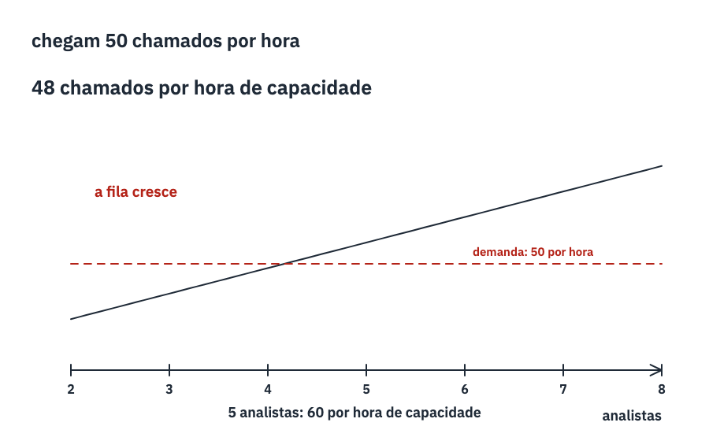
Demanda e capacidade ↔ a fila do RH Ver que a fila depende da capacidade comparada com a demanda.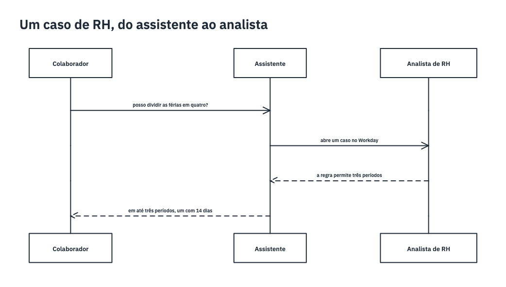
Um caso de RH, do assistente ao analista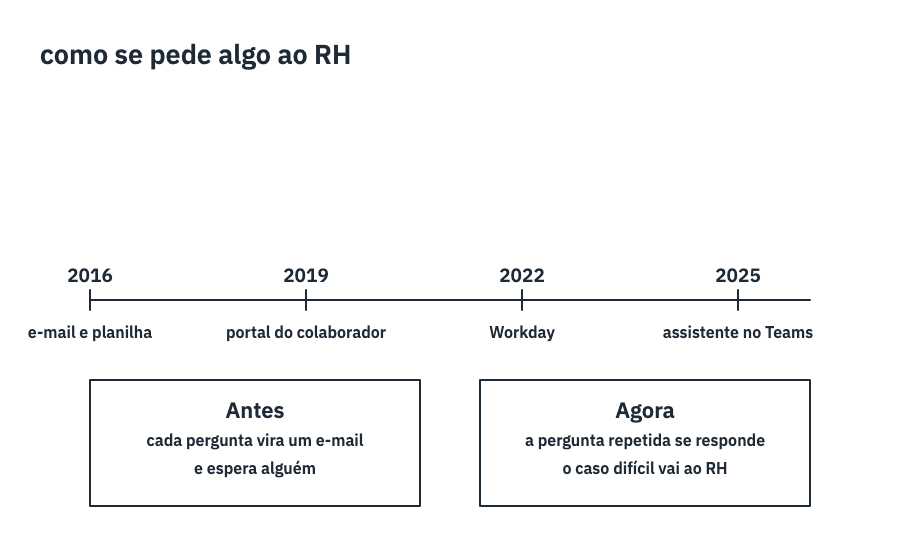
O atendimento de RH ↔ dez anos em uma linha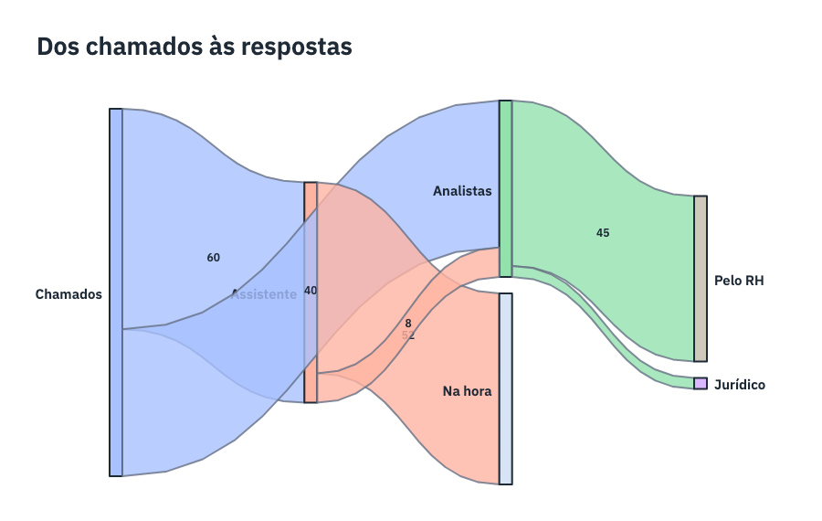
Dos chamados às respostas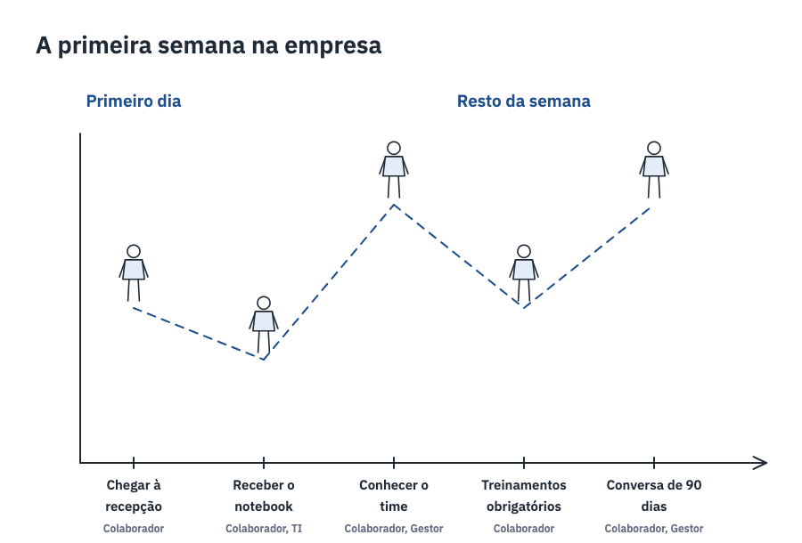
A primeira semana na empresa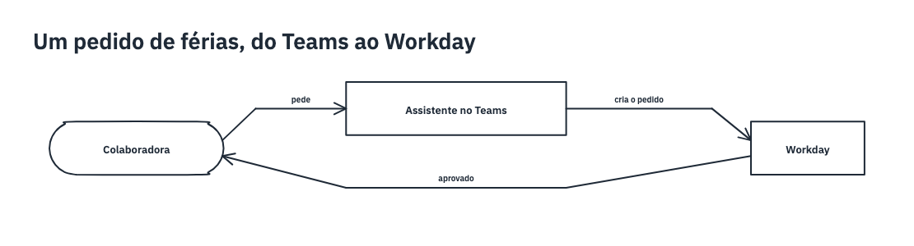
Um pedido de férias, do Teams ao Workday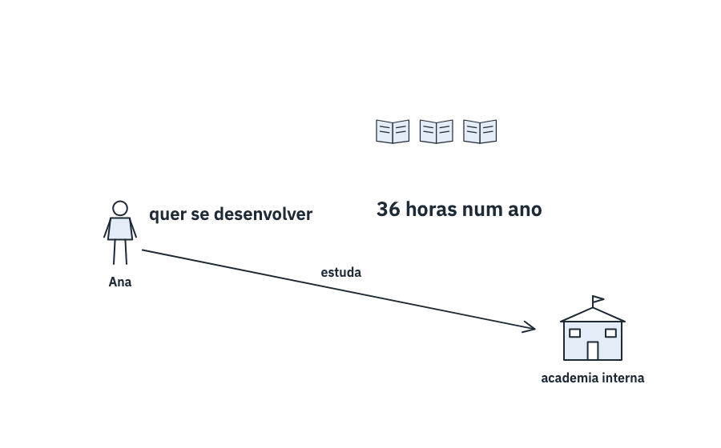
Treinamento ↔ as horas do ano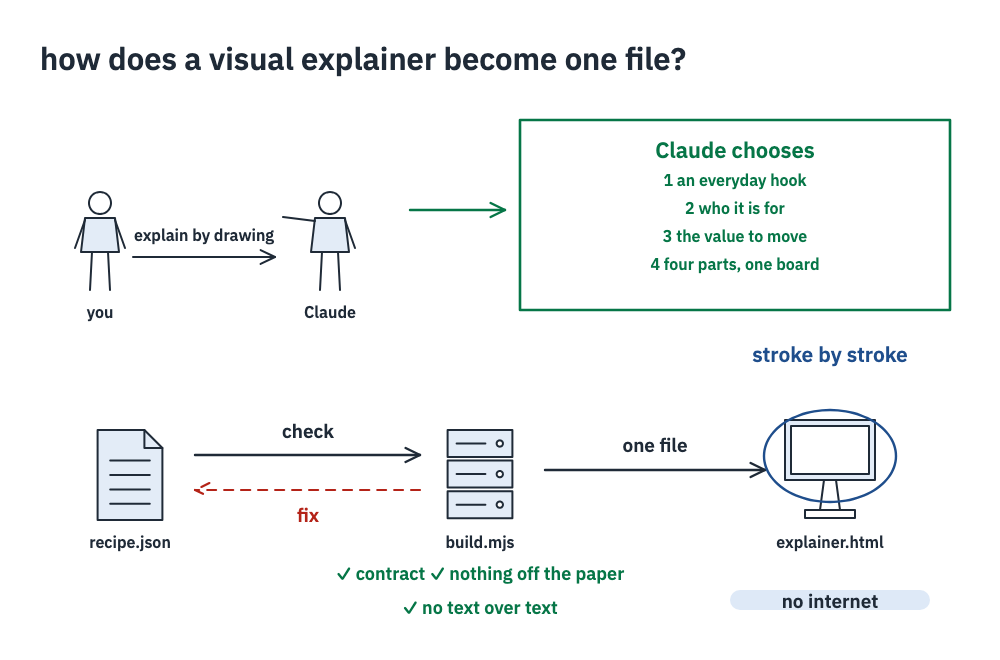
visual-explainer ↔ a teacher at the board Understand the path from a request to a self-contained HTML explainer: choices, recipe, build checks, offline player.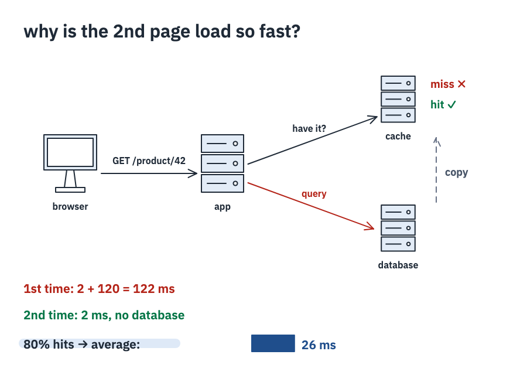
A cache ↔ the second page load Follow one request through an app with a cache, and see why the hit rate decides how fast the app feels.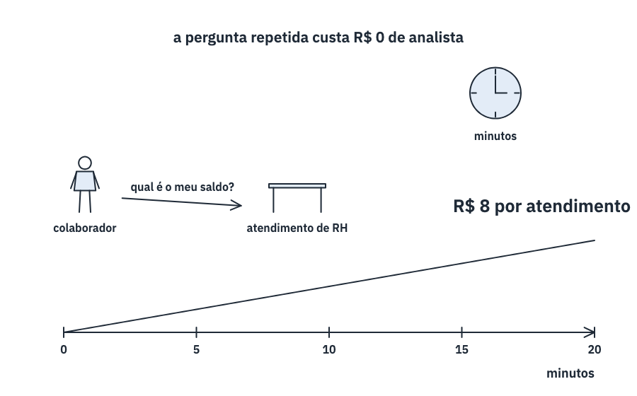
Custo por atendimento ↔ o minuto que custa Ver que o custo de um atendimento é o tempo de quem atende.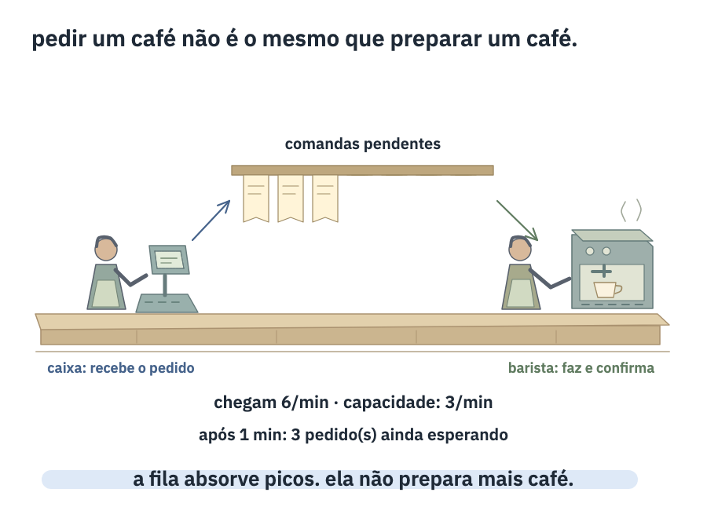
Filas ↔ uma manhã na cafeteria Entender que uma fila desacopla chegada e processamento, mas não cria capacidade.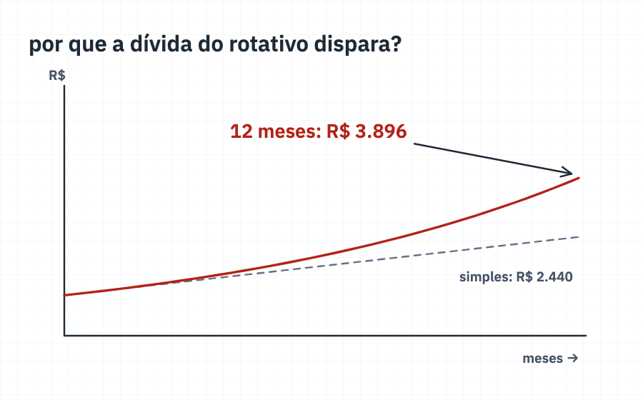
Juros compostos ↔ a fatura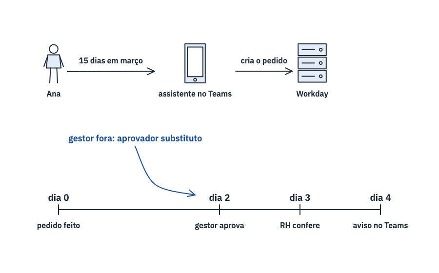
Pedido de férias ↔ do Teams ao Workday Seguir um pedido do começo ao fim e ver onde ele espera.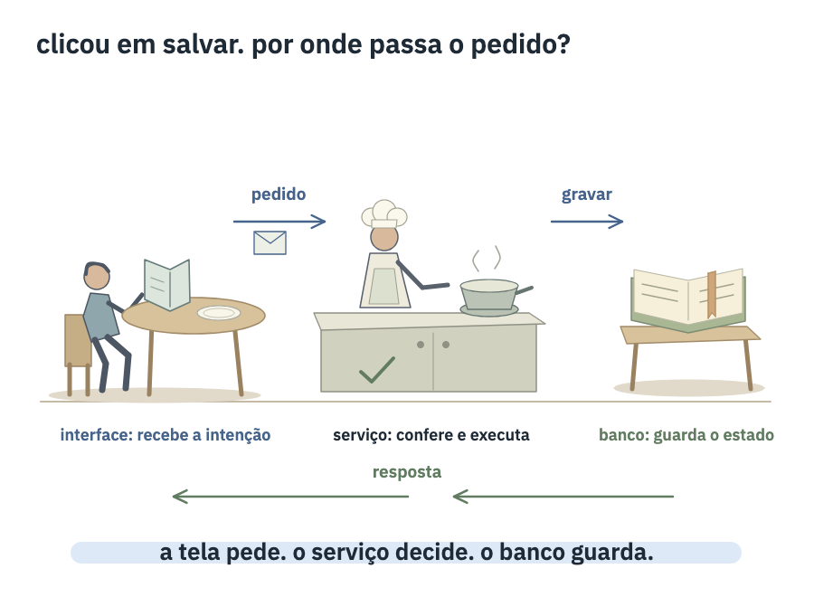
Arquitetura web ↔ da mesa à cozinha Acompanhar uma requisição e distinguir interface, regras do serviço e persistência.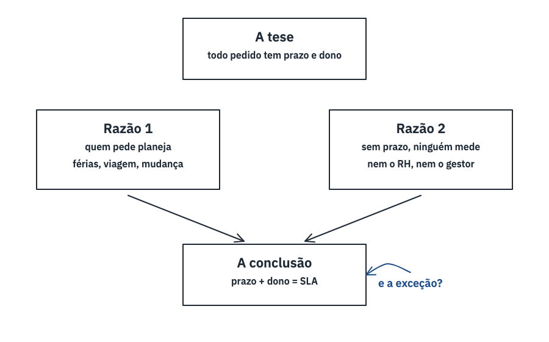
SLA do RH ↔ prometer só o que se cumpre Separar a promessa (o prazo) de quem responde por ela (o dono).How it works

- Claude chooses the everyday thing to tie the idea to, who it is for and which number moves, and draws at once — then says what it chose and offers to change it. For a class it asks first.
- It writes a short text recipe — what to draw, step by step — never the drawing itself.
scripts/build.mjschecks the recipe, builds one HTML file and, with a headless browser, checks that nothing leaves the paper and no text covers another.